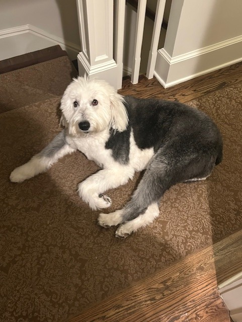
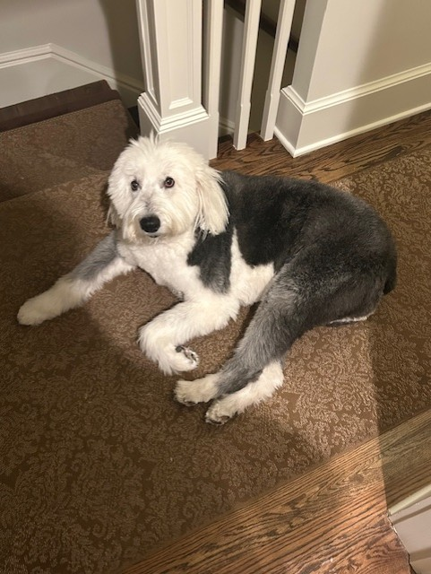

I'm currently a Junior at Quinnipiac studying Computer Science. I first got into CS in highschool when I took a beginner coding class and loved the idea of solving puzzles using code, right then I knew that it was the path for me.
Why CS: I love bringing ideas to life through code, specifically with UI and UX design, my goal is to be a Frontend Developer one day.
Fun Facts: Huge TV girl, and Paramore Fan🎧, Coaching and competing in Super Smash Bros. Ultimate (Ranked #6 in CT and currently the best Ice Climbers Main in the U.S).
I'm always willing to learn and increase my skills as a Developer — and I’m excited to keep growing in tech.
 
